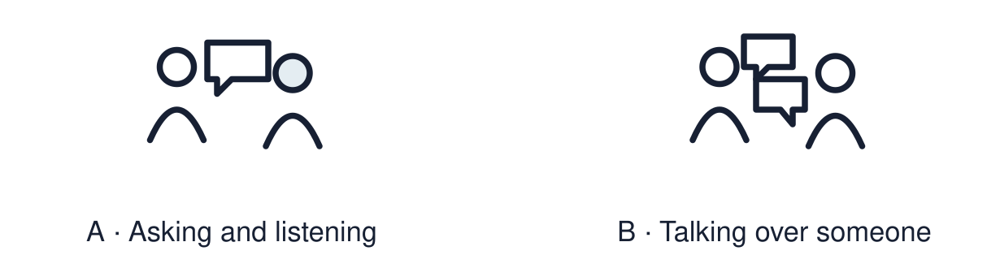

Arrival choices
Previous lesson reminder:

Start with 1 and 2. Try 3 and 4 when ready. Reading and exact scribing are available.
1 Give one respectful discussion phrase.
Support: Use the reminder strip or talk it through with an adult.
2 Which meaning fits lived experience?
Support: Choose: What life is really like for a person OR A question that is curious and kind.
3 Give one respectful question stem.
Support: Use the model evidence anchor A or read one relevant card together.
4 Does one visitor speak for everyone who shares their worldview?
Support: Give a reason when ready.
Stretch: use a precise example or explain which detail supports your answer.
Evidence cards
Read, point or listen. Keep the source label with any detail you use.
A Good questions
“What does a normal week look like for you?” “Which festival means most to you, and why?” Open, curious and about the person’s own experience.
Source: Authored classroom rules
Limit: A visitor speaks for themselves, not for everyone who shares their worldview.
B Questions to avoid
Questions such as “Why do you lot...?” stereotype people. Agree topics with the visitor first. The visitor can decline any question, and pupils may choose to listen. Do not ask anyone to speak for a whole worldview.
Source: Authored classroom rules
Limit: If unsure, check the question with an adult first.
C Jan Halliday: a real celebrant
Jan Halliday explains that she trained to lead Humanist naming ceremonies after her daughter asked her to lead a beach ceremony for her grandsons. She describes these as non-religious occasions that welcome a child. Families help shape each ceremony; examples include planting a tree or reading a poem. Paraphrased from Jan’s own public profile.
Source: Jan Halliday’s profile, Humanists UK: https://humanists.uk/celebrants/jan-halliday/naming-ceremonies/
Limit: This is a paraphrase of one real person’s public account. It cannot tell us what every Humanist thinks.
D Three areas
Belief: what do you believe? Practice: what do you do? Community: who do you share it with?
Source: Authored classroom resource
Limit: Not every question fits one area.
Shared investigation
1. Sort each class question: belief, practice or community.
2. Check each against the boundaries.
Work with a partner or adult, or use your own table. One person suggests; the other checks the evidence. Swap after one turn. Passing is allowed.
Move or match the cards
| Cards to use |
|---|
| “Who do you celebrate with?” |
| “What do you do on a special day?” |
| “What do you believe happens when we die?” |
Possible labels: Belief / Community / Practice
Support: Read one evidence card together. Highlight a useful detail. Rehearse with: I learned that ___. One question I still have is ___.
Further challenge: Explain why one visitor cannot speak for everyone who shares their worldview.
Supported independent task
Complete this route only. Ask or answer a respectful question and record one thing learned from a faith or belief visitor.
1. Choose one pre-written question.
2. Read card C, or have it read aloud. Find the answer in Jan’s account.
3. Record one thing learned with a word, symbol or scribe.
Support: Read one evidence card together. Highlight a useful detail. Rehearse with: I learned that ___. One question I still have is ___. Complete the organiser one space at a time. I learned that ___. One question I still have is ___.
An adult may read or scribe your exact response. They should not choose the answer.
Standard independent task
Complete this route only. Ask or answer a respectful question and record one thing learned from a faith or belief visitor.
1. Ask or write one respectful question.
2. Record the answer from the visitor or the source.
3. Write one thing you learned.
Support: I learned that ___. One question I still have is ___.
Check the required evidence and revise one detail.
Stretch independent task
Complete this route only. Ask or answer a respectful question and record one thing learned from a faith or belief visitor.
1. Write an open question answered by Jan’s account, then a follow-up question.
2. Record the supported answer. Mark a follow-up as unanswered if the source does not tell you.
3. Explain how this person’s experience may differ from others’.
Support: Choose the evidence independently. Use the frame only if it helps.
Explain why one visitor cannot speak for everyone who shares their worldview.
Exit ticket
Choose a response mode. You may give your answers privately to an adult.
Give one respectful question stem.
Does one visitor speak for everyone who shares their worldview?
Support: I learned that ___. One question I still have is ___.
Further challenge: Explain why one visitor cannot speak for everyone who shares their worldview.